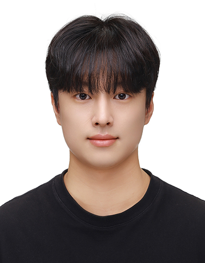

Minsoo Kang

Summary
I am a third-year student majoring in Computer Information and Communication Engineering at Chonnam National
University, with strong interests in AI, Computer Vision, and Embedded Systems. I am passionate about real-world
problem-solving through smart systems and collaborative innovation.
Education
- Chonnam National University – B.S. in Computer Information and Communication Engineering
(2019–2026)
- Gwangju Inseong High School – Graduated
- Songwon Middle School – Graduated
- Majae Elementary School – Graduated
Projects
- Smart Window Control System (Arduino, C, Bluetooth)
- Rain/Gas/Light sensor input, stepper motor control, mobile app integration
- Gesture-based Presentation Controller (OpenCV, Mediapipe, Python)
- Real-time gesture detection to control slides
- Virtual MRI Simulation (Internship) – MaryHand Inc. (Summer 2025)
- Worked on CPU-based Bloch simulation using Julia
- Focused on phantom and sequence data handling, 2D/3D FEM modeling, and simulation GUI
Skills
- C★★★☆☆
- C++★★★★★
- Python★★★★☆
- HTML/CSS/JS★★★★☆
- Linux★★★★☆
- Arduino IDE★★★★★
Certifications
- AI-900 (Microsoft Certified AI Fundamentals)
- SC-900 (Microsoft Security, Compliance, and Identity)
- PCCE (Python, C++)
- SQLD Developer
Experience & Activities
- Republic of Korea Marine Corps – Infantry Sergeant (Discharged)
- Completed full military service with honor (병장 만기전역 22.02.28 ~ 23.08.24)
- Gained leadership, resilience, and team coordination experience
- MaryHand Inc. – Virtual MRI Simulation Intern (July–August 2025)
- Developed and evaluated a physics-based MRI simulator
- Worked with Julia, KomaMRI, and anatomical 3D phantom data
- OrderNow – Patent Education Startup Intern
- Scratch-based coding instructor for elementary students
- C language mentoring in university club
- SW Competition participation
Contact